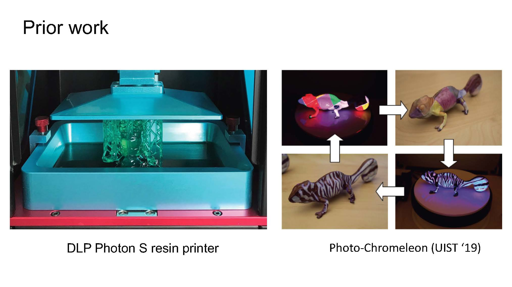
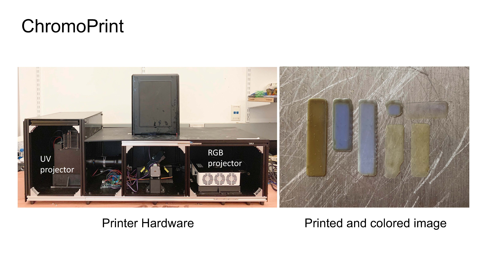
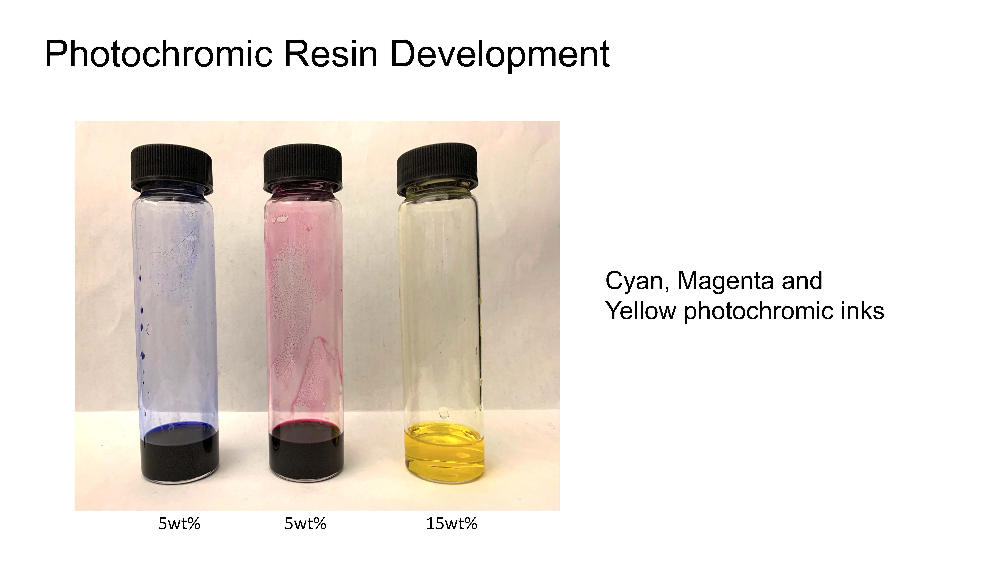
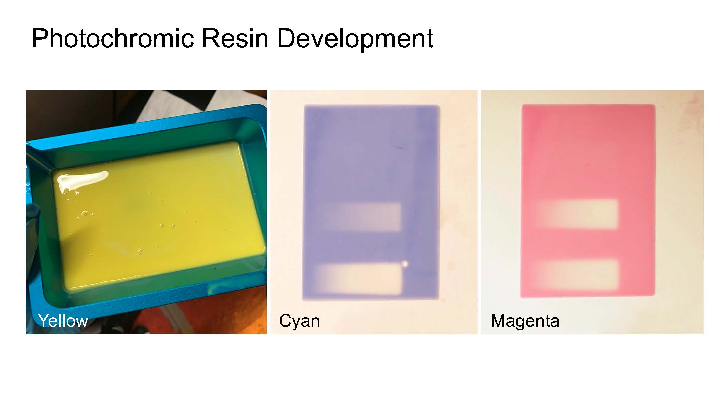
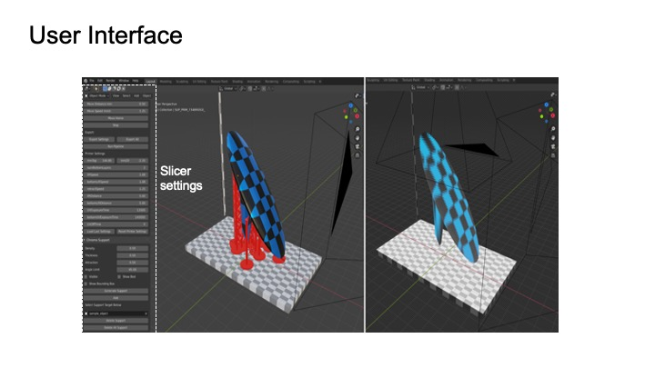
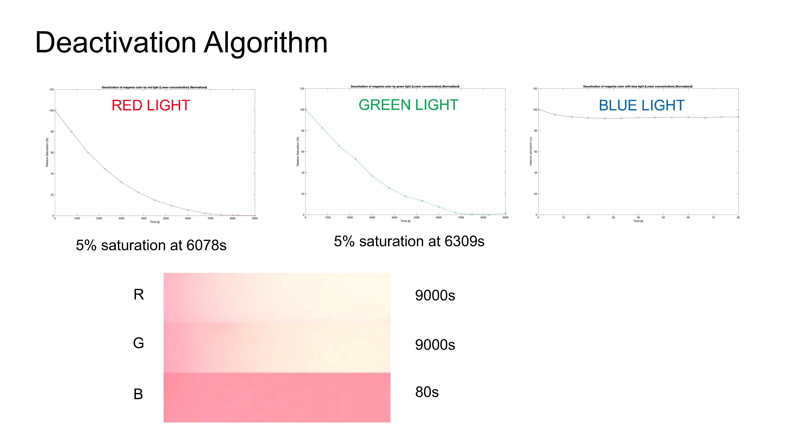
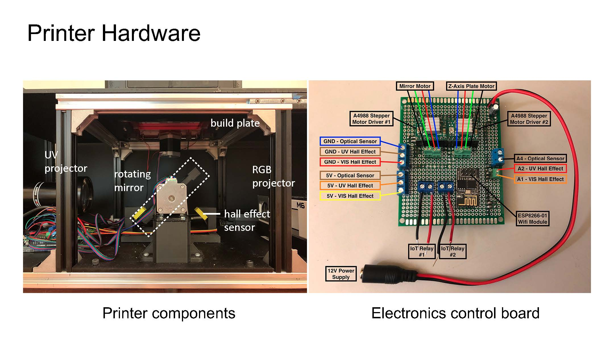
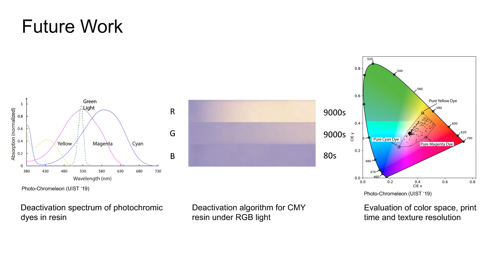
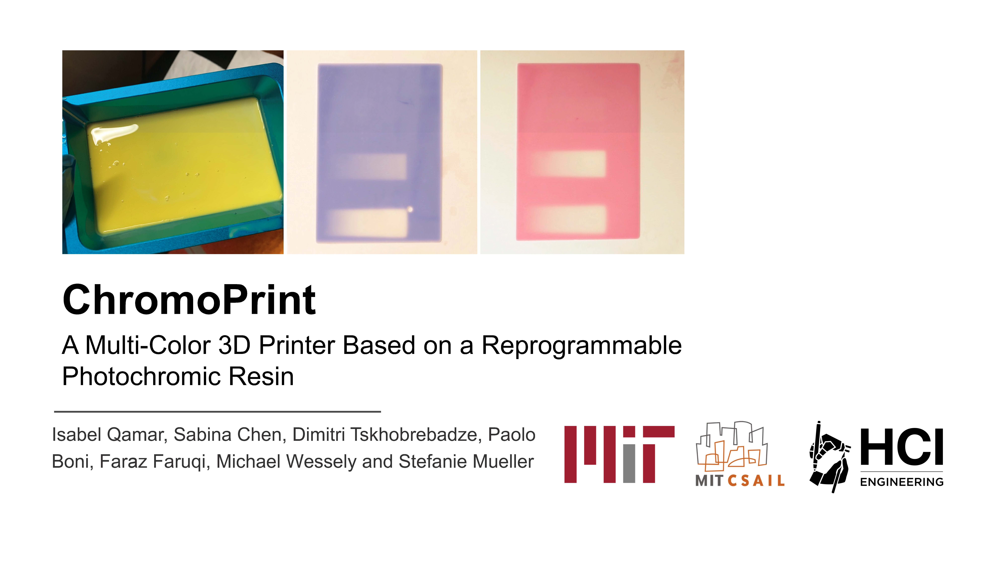

Talk
Slides         
ChromoPrint: A Multi-Color 3D Printer Based on a Reprogrammable Photochromic Resin.

Figure 1: (a) ChromoPrint multi-color resin 3D printer, (b) multi-color 3D print with a reprogrammable photochromic resin.
In this paper, we present ChromoPrint, a method which leverages photochromic dyes to convert resin-based 3D printing - a process that traditionally prints objects from a single material and therefore only a single color - into a multi-color 3D printing process. Rather than using a standard single-color resin, our resin contains a mixture of photochromic dyes that can transition into different colors when exposed to specific wavelengths of light. We modify an existing resin printer to incorporate an RGB projection system which can control each of the photochromic dyes in the resin during printing. By saturating the dyes with a UV light prior to mixing into the resin, and then projecting combinations of RGB light onto each layer after it has been UV cured, we can color objects directly during the printing process. We discuss the formulation of the photochromic resin, the modifications to the printer, the user interface that allows a user to apply color to a 3D model, and the software pipeline that outputs the build instructions to the 3D printer, including the exposure times for curing with UV light and for coloring with the RGB projector.
INTRODUCTION
Resin printing processes, such as stereolithography (SLA) and digital light processing (DLP), are some of the most commonly used technologies for 3D printing objects. These printing methods utilize a UV light source to cure a liquid photopolymer in a layer-wise manner until the entire object has been built. Compared to most other 3D printing methods, resin-based processes are able to produce parts with finer details, a higher dimensional accuracy and improved surface finish, making them a popular tool for rapid prototyping. Furthermore, these processes have significant material versatility since they are compatible with a wide range of photopolymers, the properties of which can be tailored to the specific functionality required (e.g. rigid, flexible, tough, or the resin can be filled with secondary materials such as glass or ceramic), enabling a wide range of optical, mechanical, and thermal characteristics. Although this highlights the capability of resin 3D printing processes to create objects with a wide range of mechanical and physical properties, to date, there has been limited success in developing these technologies to print objects in more than one material and consequently, more than one color. This limitation is primarily due to the inability of these printers to hold more than one resin in the tank at a time.
To address this limitation, one approach to multi-color resin 3D printing that has recently been developed involved modifying a 3D printer to incorporate multiple resin tanks and to switch between tanks during printing). The colors that can be printed, however, are limited to the number of tanks mounted. Inspired by recent work on color-changing materials (e.g. Photo-Chromeleon, ChromoUpdate), which have shown that a single material can be created that can transition into many different colors, we propose a solution that modifies a resin used for 3D printing through the addition of photochromic dyes. Our work `ChromoPrint' focuses on photochromic materials as opposed to other color-changing technologies since the color change in these materials is induced by light, which is also the process on which resin 3D printing is based. While Photo-Chromeleon utilises photochromic-ink-based coloring techniques to color the exterior of a 3D-printed object after it has been fabricated, ChromoPrint removes the need for human intervention during the whole fabrication process by allowing objects to be printed and colored through their entire thickness at the same time.
Multi-Color 3D Printing using Photochromic Dyes
Our multi-color resin printing process combines digital light processing (DLP) with photochromic materials. Inspired by the method described in Photo-Chromeleon , we mix cyan, magenta and yellow photochromic dyes into a UV-curable resin. By introducing an additional RGB projector into a DLP printer, we can selectively deactivate each of the dyes in the resin and thus color the object as it is being printed. Our multi-color 3D printer has the potential to print single objects with multiple colors and to simultaneously print multiple objects each with a different color (Figure 1). The entire pipeline of the printing system is shown in Figure 2.

Figure 2: System diagram showing the different stages of the printing process.
Developing the Multi-Color Resin
When creating our multi-color photochromic resin, our goal was to achieve the highest color saturation whilst also minimizing any detrimental effects to the printing properties of the resin.
Creating the CMY ink mixture: We use the same bi-stable, P-type photochromic dyes from Yamada Chemical Co. (blue (DAE-0001), red purple (DAE-0012), yellow (DAE-0068)) and the same ink ratio (1:1:3) as Photo-Chromeleon. Since the photochromic dyes do not dissolve directly into resin due to differing polarities of the materials, we first mixed the dyes into ethyl acetate to create the photochromic ink and then mixed the resulting ink into resin.
The vibrancy of the printed colors is largely dependant on the concentration of photochromic dye in the resin mixture. This is dictated by both the amount of photochromic dye that is dissolved in ethyl acetate to create the photochromic ink as well as the final ink:resin ratio. To determine the maximum concentration of photochromic dye that can be dissolved in ethyl acetate, we mixed each of the dyes into ethyl acetate (VWR International) separately at concentrations between 1wt\% and 20wt\%, at 1wt\% increments, and sonicated for 30 minutes. We then visually observed whether any undissolved dye particles could be seen in the solution. Beyond concentrations of 15wt\%, we observed undissolved particles at the bottom of the vial of yellow dye, meaning that the dye has reached its solubility limit in ethyl acetate. 15wt\% is therefore the maximum concentration of yellow dye achievable in this solvent. To create the CMY photochromic ink mixture with a C:M:Y ratio of 1:1:3), we mixed the yellow dye into ethyl acetate at a concentration of 15wt\% as determined previously. We then mixed cyan and magenta dyes into separate vials of ethyl acetate, each at a concentration of 5wt\%.
Creating the photochromic resin: To create the photochromic resin, we chose a white resin as the base material as this enabled the photochromic colors to appear more vivid when activated, compared to a clear resin. We used `White Resin' from Formlabs since this particular resin does not require post-processing under UV light after printing, which would affect any color textures that were applied during printing. According to the specification from the manufacturer, the optimal wavelength for curing this resin is 405nm. We mixed 5 parts of the CMY photochromic ink to 95 parts resin by weight using a vortex mixer for 1 hour to create the photochromic resin. This ratio was chosen to ensure that the white resin was close to its initial formulation for successful 3D printing, yet enough photochromic dye was present for highly saturated colors to be achieved. Figure 3 shows early print tests of individual yellow, cyan and magenta photochromic resins, and the capability of an RGB projector to control the amount of photochromic color activated in the resin (indicated by the areas in white).
![Three images showing different colored photochromic resins: The left image shows yellow resin in a resin tank; The centre images shows the effect of shining R, G, B light on the cyan resin (blue light had no effect on the cyan resin, green light deactivates the cyan resin slowly, red light deactivates the cyan fastest); The right images shows the effect of shining R, G, B light on the magenta resin (blue light had no effect on the magenta resin, green light and red light both deactivate the magenta resin to approximately the same degree).](images/resin.png)
Figure 3: Individual photochromic dyes mixed into resin for an early print test. (a) Yellow resin in the resin tank. In (b,c) we 3D printed 5 layers of the individual photochromic resins and tested if the RGB projector could deactivate each resin, which is indicated by the white areas on the printed samples.
Activating the photochromic inks: Prior to dissolving the photochromic ink mixture into the resin, the dyes must be activated with a UV light until the CMY dye mixture is fully saturated, i.e., the color is black. Activating the dyes after mixing into the resin or during the printing process would cause unwanted curing of the resin, since UV light also cures the resin; Therefore, before mixing into the resin, we placed the photochromic CMY ink mixture on a vortex mixer in front of a UV light source and mixed it in a sealed, blackout enclosure for 20 minutes until the inks were fully activated and the solution turned black. Once the dyes are activated and mixed into the resin, the resin must remain within a light-sealed container before pouring it into the resin tank to ensure unwanted deactivation does not occur.
Printing Hardware
Our printing hardware, shown in Figure 4a, consists of a regular DLP printer with an additional RGB projector and a switchable mirror that can flip to either project the UV light for curing the layer or the RGB light for coloring the layer
UV projector for curing: We implemented our technology using an existing UV LCD resin 3D printer (ANYCUBIC Photon S) with a single tank. By default, this resin printer uses a 405nm UV LED light source combined with an LCD masking screen. The LCD screen acts to block out light in certain areas and only the remaining areas where the light passes through gets cured. However, we found that the LCD masking screen does not allow visible light to pass through, which is necessary for controlling the color of the photochromic resin. We therefore replaced the UV LED and LCD screen with a 385nm UV projector (InVision Ikarus Full-HD DLP6500 light engine) and a tempered glass screen (FYSTEC).
RGB projector for coloring: To change the colors in the resin, we mounted an additional light source below the resin tank: an RGB projector (AAXA Technologies M6 1200 Lumens LED Projector) set to an intensity of 12A. As in Photo-Chromeleon, the default green LED from the visible light projector creates a light output over a broad wavelength range, deactivating the yellow and cyan dyes in addition to the magenta dye. We therefore added a filter in front of the green LED (Semrock Brightline ® FF02-529/24-25) to limit the wavelength range to primarily deactivate magenta.

Figure 4: (a) Close up of the rotating mirror directing the UV projector output and RGB projector output towards the build plate, (b) custom control electronics board for the printer.
Switching between curing and coloring: To switch between the UV projector and the RGB projector, we mounted two mirrors (Optical Mirror, Glass First Surface Mirror, reflective efficiency of 96\%) back-to-back, between the two light sources. The mirrors are controlled by a stepper motor and rotate 90°, switching the beam of light that is directed into the resin tank between the UV projector and the RGB projector. The angular position of the mirror when directing the UV light and the RGB light into the resin tank is detected by a magnet mounted on the bottom of the rotating mirror and two hall-effect sensors mounted on the mirror's frame.
Moving the build plate: We use the existing stepper motor to raise and lower the build plate and the existing optical limit switch to calibrate the location of the build plate to the home position at the start of every print.
Custom electronic control boards: To interface with the mirror motor, the hall effect sensors on the mirror frame, the build plate motor, and the optical limit switch on the build plate, we built a custom electronics control board, shown in Figure 4b, that contains a microcontroller, which connects to each of the components.
Opaque print enclosure: External light that enters the printer may affect the colors during printing. To prevent this, we painted the upper casing of the printer that houses the build plate and resin tank with a black sealant. We also enclosed the lower part of the printer in a black opaque acrylic casing, with two cut outs at each end of the casing for cooling fans.
Printing Process
Our printing process works similar to existing color inkjet printing processes such as the da Vinci 3D printer. It first creates the geometry of the layer and then colors it. After a layer has been colored, the build platform raises and the next layer is printed and colored. This repeats until the entire object has been built.
In detail, the process works as follows: After the build plate has moved to the position of the first layer, the mirror rotates to direct UV light into the resin tank and the UV projector turns on and projects the first image to cure the first layer of the object. After the first layer has cured, the mirror rotates 90° and the UV light is replaced by the RGB light from the RGB projector. This projector then shines a series of projection images onto the previously printed layer of resin (using the same coloring algorithm as inPhoto-Chromeleon) to color the layer. Once the coloring has completed, the platform raises by the specified layer height, the mirror rotates back to the UV light, and the next layer begins printing. This repeats until all layers have been printed and colored. When the print has finished, the build plate moves to the top of the printer and the print can be removed. After printing, the object is washed for 30 minutes to remove excess uncured resin from the outer surfaces of the object by placing it in a light-sealed container of isopropyl alcohol.
USER INTERFACE
We built a custom user interface and slicer as an add-on to the 3D editor Blender. Users can apply color textures to their 3D models, define the slicing settings, and then slice their 3D model to generate the custom build instructions for printing.

Figure 5: (a) ChromoPrint user interface and slicer integrated into the 3D editor Blender, (b) sliced object.
Applying color to the 3D model: Users start by loading their 3D model into the 3D editor (Figure 5a). Next, users apply a virtual texture to the digital model using Blender's texture mapping tools. Users also have the option to edit the colors on the 3D model's surface directly using a custom `brush' tool. Selecting the `Preview' button converts the texture to the closest approximation that can be realized within the available color space of the photochromic resin (Photo-Chromeleon). The user can toggle between the virtual and the preview texture, adjusting colors as required.
Slicing and printing the 3D model: To slice the 3D model, the user enters the desired layer height and then selects `Slice' in the user interface, which splits the model into a series of layers, each layer containing its part of the color texture (Figure 5b). The user can choose to generate supports for the printed objects and define more detailed printer settings, such as UV exposure times and lift speeds. To print the model, the user selects `Print' in the user interface, which sends the build instructions to the 3D printer.
SOFTWARE IMPLEMENTATION
In this section we discuss the implementation of the 3D printer pipeline, i.e. how the 3D model is converted into black and white images for curing, as well as the colored images for creating multi-color textures, and how the build instructions are generated.
Slicing the 3D model: To slice the 3D model, our software splits the 3D geometry into a series of 2D planes at intervals representing the selected layer height for 3D printing. Once the layers are generated, our software outputs a folder of black and white images (.png) - one for each layer to cure the geometry, a folder of color images (.png) representing the virtual texture for each layer, and a file with print settings (.json). While the black and white images can be used as direct input for the UV projector to create the geometry of the layer, the color images representing the virtual texture need further post-processing to convert them into the photochromic color control light sequence for the RGB projector.
Converting the virtual colors into RGB projections: The colored images are automatically imported into a custom program in \textit{Processing}, which converts each colored layer image into a series of projection images for coloring by the RGB projector. To create the deactivation images for each layer, \textit{Processing} converts the color values of each pixel into deactivation times for each of the projector's R, G, B color channels. It then computes the optimal deactivation times for each pixel using the optimization algorithm from Photo-Chromeleon.
Generating the build instructions: After the RGB projection images have been created, Processing generates the build instructions for the printer based on the defined layer height, the time required for the UV projector to cure the resin (bottom layer exposure time, layer exposure time), the time required for the RGB projection, the retraction speed of the build platform, and the rotating speed of the mirror. Processing then uses these build instructions to interface with the printer: It first controls the z-motor of the build plate to move it into its initial position for printing, which it determines by reading the values output from the optical limit switch on the build plate. It then sends instructions to the mirror motor to move to the initial position for printing, i.e. the position which will direct UV light into the resin tank. To determine if the motor is in the correct position, Processing continuously reads the outputs from the hall effect sensors mounted on the mirror frame. Once the mirror has reached that position, the black and white projection image for the first layer is sent to the UV projector for the duration of the `bottom layer exposure time', which results in the first cured layer. After this time has elapsed, Processing controls the mirror motor to rotate towards the RGB projector, again monitoring the hall effect sensors to determine the correct position. Once the mirror has reached this position, Processing sends the projection images for coloring that layer to the RGB projector. After the total time for coloring has elapsed, Processing controls the mirror motor to return to its initial position and controls the z-stepper motor to move the build plate up by the `layer height' at the `retraction speed'. The process then repeats, but uses the `Layer exposure time' for UV curing each subsequent layer after the bottom layer.
LIMITATIONS AND FUTURE WORK
So far, we have finalized the printing hardware including the integration of the new projection systems and control electronics. We have also completed our work on the user interface with a custom slicer that generates the build instructions for the new printing process. In addition, we have developed an initial CMY photochromic resin and ran a set of test prints to verify that the idea behind our new printing process works. However, there are several steps that we still need to complete, which we outline below.
Absorption spectra of dyes in resin: The absorption spectra of the dyes are key to ensuring that a large color space can be accomplished. If the absorption spectra of the cyan, magenta, and yellow photochromic dyes overlap significantly, they cannot be deactivated individually. Photo-Chromeleon measured the absorption spectra of the dyes when mixed in ethyl acetate, with a spectrophotometer, however, mixing them into a different material, such as a resin, may shift the absorption spectra slightly. We therefore have to repeat these experiments and, based on the result, may either choose to use other photochromic dyes or change the filter in the RGB projector to cut off other parts of the light spectrum.
Timing the RGB projections: Although Photo-Chromeleon measured the deactivation times of each photochromic dye, the results are only valid when the dyes are dissolved in ethyl acetate and the same projector distance is used. Since we have a different hardware setup and use photochromic dyes in a different material, we need to repeat these deactivation experiments to determine the RGB projector illumination times.
Between-layer interference for RGB projections: Since the resin is slightly translucent, light projected onto the recently printed layer also partially hits the previous layers. To address this, we will measure how much light passes through the previous layers and then develop a new optimization algorithm that takes these between-layer effects into account. For instance, by not fully desaturating a layer when it is being printed, we can use the subsequent light exposure to create the rest of the color change.
Evaluating print time, color space, and texture resolution: We will evaluate the overall print time, color space, and texture resolution. Our initial experiments showed that coloring a layer takes significantly less time than in Photo-Chromeleon since a printed layer is very thin and thus the photochromic dyes can be desaturated in less than one minute. In addition, unlike inkjet printers, our projection-based approach creates the color on the entire layer at once, which is especially beneficial for large-scale prints. We expect the overall color space and texture resolution to be slightly reduced when compared to Photo-Chromeleon due to the between-layer interference, and a slight blur at the edge of textures due to a scattering of the light.
Applications for prototyping: Finally, we will showcase different applications of our technique for prototyping. While photochromic dyes fade out under environmental light (depending on the intensity of light this can be days or hours), our system allows designers to prototype full-color objects and to evaluate if any changes are needed for the next prototyping iteration. In case designers have access to a system similar to Photo-Chromeleon, they can also reapply the color at a later stage or update it to a new appearance.
CONCLUSION
In this paper, we demonstrated ChromoPrint, the first multi-color 3D printer based on a reprogrammable resin. To achieve this we incorporate CMY photochromic dyes into a UV-curable resin, and introduced an RGB projector into the printer to color each layer, in addition to the UV projector used for curing each layer of resin. We detailed the development of the photochromic resin, described how we created the printer hardware, and showed our custom user interface with integrated slicing that allows users to color a 3D model and then generate the build instructions for 3D printing with the photochromic resin. Finally, we laid out steps for our future work including additional measurements on the photochromic resin, projection times, algorithmic optimization as well as an evaluation of the print time, color space, and texture resolution.